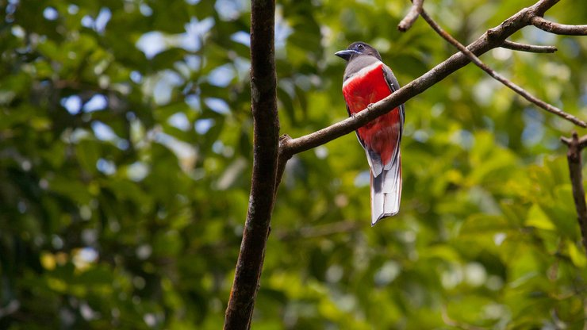
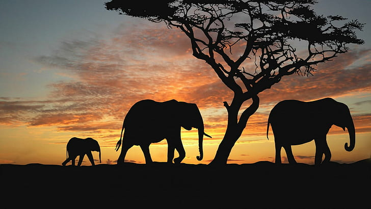
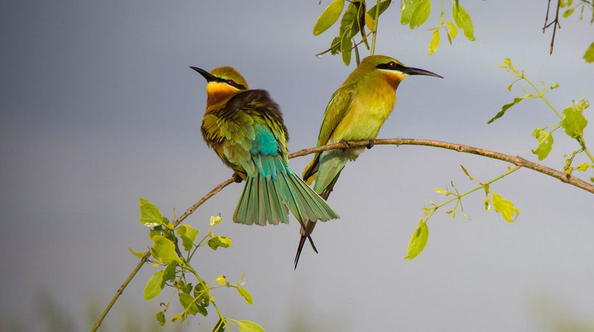

Home
SL Wildlife Introduction
Department of Wildlife Conservation
SL Leopard
Animals in Sri Lanka
LOGIN
Locations to spot wildlife in Sri Lanka

Animals you can spot in these locations
| Location | Animal name | Animal | Intersteing facts |
|---|---|---|---|
| Sinharaja Forest | Endemic birds |  | It’s known that 95 percent of Sri Lanka’s endemic birds are present in Sinharaja, making it a birding expedition unlike any other. Another interesting sight to be found in Sinharaja is the presence of mixed species of foraging bird flocks, a phenomenon commonly found in rainforests. A hundred such flocks have been systematically observed, and studies have revealed that some flocks contained 48 species, including 12 endemic to the island. The rare endemic birds to be seen in the Sinharaja Rain Forest are the Red-faced Malkoha, the Sri Lanka Blue Magpie, the Ashy-headed Babbler and the White-headed Starling. The Green–billed Coucal has been given the title of being the Rarest of Sri Lankan birds. |
| Mammals |  |
Out of 12 endemic mammal species of the country 8 are found here. Giant squirrel, dusky-stripped jungle squirrel, badger mongoose and endemic purple-faced leaf monkey and torque macaque are frequently seen. Though seldom sighted, it is estimated that 15 Sri Lankan Leopards live within the confines of this nature reserve while the Brown Mongoose and the Golden Palm Civet have been occasionally spotted. | |
| Retiles and Amphibians |  |
The most common reptile is the Green Garden Lizard. The Calotes liolepis, an arboreal species, is the rarest of all agamids found on the island to reside within the Reserve. The only Tortoise recorded on the Reserve is the Hard-shelled Terrapin. Among the snakes, the Green Pit Viper and Hump-nosed Viper are commonly found in this forest and are endemic to Sri Lanka, along with 8 others; which include the endemic Torrent Toad and the common House Toad. The Wrinkled Frog and the Sri Lankan Reed Frog, too, are found in most streams and marshes within the Reserve. | |
| Hikkaduwa national park | Corals |  |
In this National Park, which has been declared with the purpose of coral reef conservation, coral reefs are classified as fringing reefs, barrier reefs and atolls according to the nature of the corals.60 species of corals belonging to 31 genera have been recorded. |
| Fish species |  |
In Hikkaduwa National Park, 113 species of reef associated fish species belonging to 48 genera and 8 species of colorful fish have been recorded. | |
| Invertebrates |  |
Many invertebrates such as crabs, turtles, shrimps, lobsters, oysters and sea worms are also found. Three species of turtles are also foundin Hikkaduwa Marine National Park. | |
| Minneriya national park | Mammals |  | Among the 24 species of mammals resident in the park are Elephants, Leopards, Sloth Bear, Spotted Deer, Sambar Deer, Wild Buffalo, Wild Pig, Grey Langers, Purple-faced Leaf Monkey, three species of Mongoose, Porcupine and Indian Pangolin. |
| Birds |  | Minneriya National Park has recorded over 170 species of birds. From Migrating waders like Woodsand Piper, Common Sandpiper & Kentish Plovers to forest birds like Malabar-pied Hornbills, Rufus Woodpecker the globally endangered Lesser Adjutant and the endemics Sri Lanka Grey Horn-bill, Sri Lanka Green Pigeon, Brown-capped Babbler and Sri Lanka Jungle Fowl are some of the highlights. | |
| Animal Conservation | |||